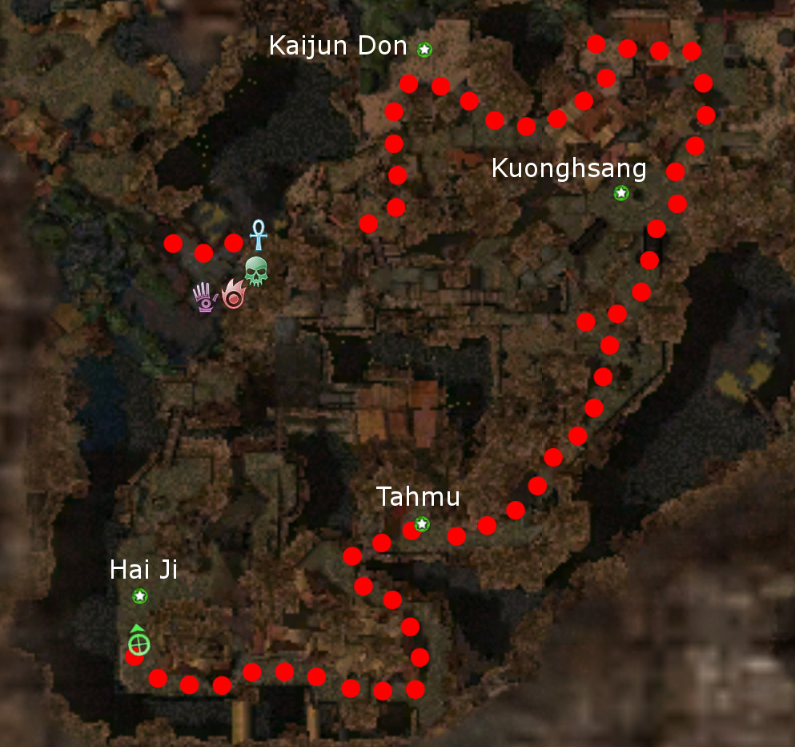

Elite: Signet of Judgment
M4
Nahpui Quarter
◉ Mission Map

Click to enlarge · Local cache · Wiki
Summary (click to expand)
The players complete this mission to become Weh no Su to be able to see and fight beings from the spirit realm in the mortal realm. This mission is equivalent to the Ascension in the Prophecies campaign, or completing Hunted! of the Nightfall campaign.
Region: Kaineng City · Mission: 4 of 13 · Type: Cooperative
✓ Objectives
Defeat the celestial creatures to become Closer to the Stars.
- Defeat Kaijun Don, the Celestial Kirin.
- Defeat Kuonghsang, the Celestial Turtle Dragon.
- Defeat Hai Jii, the Celestial Phoenix.
- Defeat Tahmu, the Celestial Dragon.
→ Walkthrough
The party must defeat the four Celestial creatures to become "Weh no Su", Closer to the Stars. Each Celestial boss spawns at a fixed point on the map, marked by the green stars on the mission map. Once a Celestial boss is killed, it causes multiple weaker versions of the Celestials to spawn, they have some of the same skills as their Celestial boss and should be fought in the same way . These weaker versions also do re-spawn 3 minutes after being killed, so be on the move to avoid having to fight foes you have already defeated. The four bosses can be defeated in any order; however, it is easier if the party enters the far left portal first as the essences will be easier to fight. The key to succeed in this mission is to keep moving cautiously forwards, and not to hang around too long in the same spot.
There also are three varieties of Star Tengu throughout the mission that do not re-spawn: Star Blade, Star Sentinel and Star Light.
| Boss | Kaijun Don | Kuonghsang | Tahmu | Hai Jii | |||||||||||||||||
| Image |  |
 |
 |

| |||||||||||||||||
| Skills |
|
|
|
| |||||||||||||||||
| Portal | Left | Left ramp | Right ramp | Right |
★ Bonus
See walkthrough and objectives for bonus details (if any).
◆ Hard Mode
Avoid over-aggroing, pull enemies to prevent overwhelming numbers.
☠ Bosses & Elites
✦ Tips & Notes
Skill recommendations
- Stance removal skills to counter Star Blades's Balanced Stance and Sentinels's Lightning Reflexes.
- Hex removal skills help against Hai Jii, Tahmu, and their essences.
- Area of effect damage skills to deal with the large number of foes.
- Since Celestials are not fleshy, skills that inflict Bleeding, Disease or Poison, or require corpses are less effective here.
- Anti-caster skills, since most foes are spellcasters.
- A minion master can balance your party's number since there are many Tengu that leave exploitable corpses even though the Celestials do not. Essences of Turtle will deny you of corpses via use of Well of Weariness.
- Enchantment-based builds are vulnerable to enchantment removal by Essences of Turtle and so long recharge enchantments should be avoided.
Notes
- Completion of this mission will fill in page #2 of the Shiro's Return storybook.
- Immediately after the last boss dies, the mission will end, and your party will be taken to Senji's Corner.
- Keep boss order in mind when trying to capture skills, as there will not be enough time to use Signet of Capture on the fourth boss.
- Similar to other foes that respawn/resurrect after being killed, respawned Celestial essences neither give experience nor drop any loot.